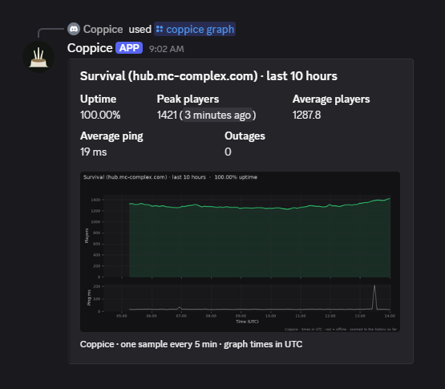

Know your Minecraft server is down before your players tell you.
Coppice is a Discord bot that checks your server every minute. If the server fails to answer twice in a row, it posts one alert and pings the role you pick. Between outages, a status card in your channel shows players, version and ping.
Free for up to 10 Minecraft servers per Discord. Java and Bedrock.
Set up with one command, inside Discord. No account, no dashboard.
What happens when your server goes down
One missed check can be a blip, so Coppice checks again before it says anything. Here is the example outage, check by check.
- 9:50:00 PMCheck. The server answers.The card shows 14 players and 38 ms.
- 9:51:00 PMCheck. No answer.Nothing is posted yet. One miss on its own never alerts.
- 9:51:20 PMSecond check, 20 seconds later. Still no answer.That's two in a row. The alert goes to your alert channel, your role is pinged if you picked one, and the card turns to Offline.
- 9:52 to 10:38 PMChecked every minute while it's down.One alert is enough. The card keeps count of how long it's been down.
- 10:39:00 PMThe server answers again.You get a back-online message with how long it was down, and the card turns green.
These times show how the checks are spaced. How fast an alert reaches you also depends on your server's network and on Discord.
Set up in one command
Everything happens in Discord. There's no dashboard and no account to make.
Add Coppice to your Discord
Pick your Discord on Discord's add page. You need the Manage Server permission.
Run setup in the channel you want the card in
Type
/, pick Coppice from the list, thensetup, and give your server's address. Or paste the line below. Coppice works out whether it's Java or Bedrock./coppice setup play.yourserver.netThe card appears
Alerts go to the same channel unless you pick another.
/coppice settingslists every setting and the command that changes it. All commands.
Will it work with my server?
If players join it by typing an address, Coppice can check it: Java or Bedrock, any host,
or your own PC if it's reachable from the internet. Try it first with
/coppice status and the address: it checks once and watches nothing.
- The address is what players type under Multiplayer, Add Server (Java) or Servers, Add Server (Bedrock), like
play.example.netor1.2.3.4:25565. Your host's control panel shows it too. - Realms can't be checked. A Realm has no public address.
- Hosts that sleep an empty server (common on free plans) answer however they answer players, which may read as offline. Coppice reports what it sees.
Permissions it asks for
View Channels, Send Messages, Embed Links, Attach Files and Read Message History: enough to post and update its own messages. It doesn't have Discord's Message Content permission or admin rights. What it stores.
It doesn't ask for Mention Everyone either, so it can only ping a role that anyone may mention. If your alert role isn't pinged, open Server Settings, Roles, pick the role and turn on "Allow anyone to @mention this role". Coppice says so when you pick a role that needs it.
Coming from MCStatusBot?
/monitor, /status, /nickname, /default and
/unmonitor work here, with the option names that bot used. What you get is different:
a status card and alerts instead of renamed voice channels. MCStatusBot was set to stop on
09/01/2026. What carries over.
Graphs, quiet hours and the rest
All optional. The card and the alerts work without any of it.

/coppice graph, drawn by Coppice's own code from a week of example data. Outages are shaded.
- Graphs
- Players, ping and uptime for the last 24 hours, 7 days or 30 days, with peak and average players and an outage count.
- Quiet hours
- Alerts wait overnight in your time zone and arrive as one summary when the window ends. The card keeps updating.
- Patch notes
- Each new Minecraft Java release, posted to a channel you pick.
- Nicknames and card color
- Call it Survival instead of play.example.net, on the card, alerts and lists. Pick the card's color.
- When the alert channel is gone
- If someone deletes or locks it, alerts post next to the card instead, and
/coppice settingssays what to fix. - Every command
- On the commands page, or run
/coppice helpin Discord.
Every check and alert is free. Premium adds room and history.
$0 for up to 10 servers per Discord
$4.99 a month per Discord for Premium. Not on sale yet.
| Feature | Free | Premium |
|---|---|---|
| Servers | 10 | 25 |
| Checks and alerts | Every 60 s | Every 60 s |
| Graphs | 24 hours, 7 days, 30 days | Adds 90 days |
| Quiet hours | Yes | Yes |
| Patch notes | 1 channel | 5 channels, plus snapshots |
| Your own alert wording | No | Yes |
If Premium ends, servers over the free limit pause (newest first) and start again when Premium is back. Graph history older than 31 days is deleted within the hour. Nothing else is lost.
Referrals: /coppice premium shows your Discord's code. When
another community enters it with /coppice redeem within 14 days of adding Coppice, and Coppice is still
watching a server there 14 days later, both Discords get 30 days of Premium.
Referral rules.
Before you add it
- Will it work with my server?
- Almost certainly, if players join by address. Realms can't be checked. The details.
- Can it be wrong?
- Yes. If the network between Coppice and your server has trouble, or Discord is down, an alert can be late, missed or false. The second check is there to stop one-off false alarms. Don't rely on it alone for anything critical. What is and isn't watched.
- Why does the card say "Status as of 2 minutes ago"?
- Each card says when its status is from. When Discord is busy, Coppice sends alerts first and redraws cards after, so a quiet card can lag a minute or more behind the checks. The checks themselves still run every 60 seconds.
- What does it see?
- What any player sees on the multiplayer screen: online or not, player count, version, message of the day and ping. Player names only if your server shares them.
- Is AI involved?
- In building and running it, yes. Coppice's code, this site and many support replies are written with AI tools. A person owns Coppice and is accountable for it. The bot itself uses no AI: checks, cards and alerts are ordinary code. More in Privacy.
- Where do I get help?
- Ask in the Coppice Support server on Discord, run
/coppice help, or email support@coppicebot.com.